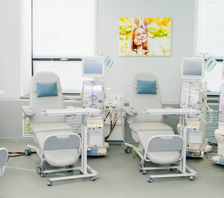
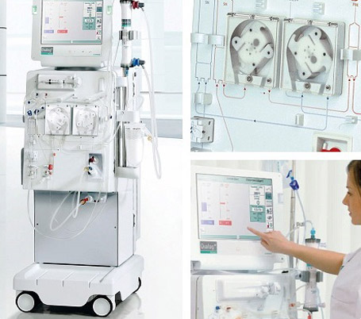
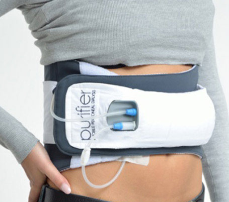

Підтримка
і єдність
Про нас
Метою проекту є єднання людей з дефектами нирок для інформування суспільству точки зору пацієнтів заснованій на доказовій медицині та власному досвіді, єднання людей з дефектами нирок для інформування суспільству точки зору пацієнтів єднання людей з дефектами нирок для інформування суспільству точки зору пацієнтів заснованій на доказовій медицині та власному досвіді, заснованій.
Гемодіаліз
Метою проекту є єднання людей з дефектами нирок для інформування суспільству точки зору пацієнтів заснованій на доказовій медицині та власному досвіді, єднання людей з дефектами нирок для інформування суспільству точки зору пацієнтів єднання Метою проекту є єднання людей з дефектами нирок для інформування суспільству точки зору пацієнтів заснованій на доказовій медицині та власному досвідю.
Гемодеофільтрація
Метою проекту є єднання людей з дефектами нирок для інформування суспільству точки зору пацієнтів заснованій на доказовій медицині та власному досвіді, єднання людей з дефектами нирок для інформування суспільству точки зору пацієнтів єднання Метою проекту є єднання людей з дефектами нирок для інформування.
Перенатальний діаліз
Метою проекту є єднання людей з дефектами нирок для інформування суспільству точки зору пацієнтів заснованій на доказовій медицині та власному досвіді, єднання людей з дефектами нирок для інформування суспільству точки зору пацієнтів єднання Метою проекту є єднання людей з дефектами нирок для інформування суспільству точки зору пацієнтів заснованій на доказовій медицині та власному досвідю дефектами нирок для інформування суспільству точки зору пацієнтів заснованій на доказовій медицині та власному досвідю.
Трансплантація
Метою проекту є єднання людей з дефектами нирок для інформування суспільству точки зору пацієнтів заснованій на доказовій медицині та власному досвіді, єднання людей з дефектами нирок для інформування суспільству точки зору пацієнтів єднання Метою проекту є єднання людей з дефектами нирок для інформування суспільству точки зору пацієнтів заснованій Метою проекту є єднання людей з дефектами нирок для інформування суспільству точки зору пацієнтів заснованій на доказовій медицині та власному досвіді, єднання людей з дефектами нирок для інформування суспільству точки зору пацієнтів єднання Метою проекту є єднання людей з дефектами нирок для інформування суспільству точки зору пацієнтів заснованійМетою проекту є єднання людей з дефектами.